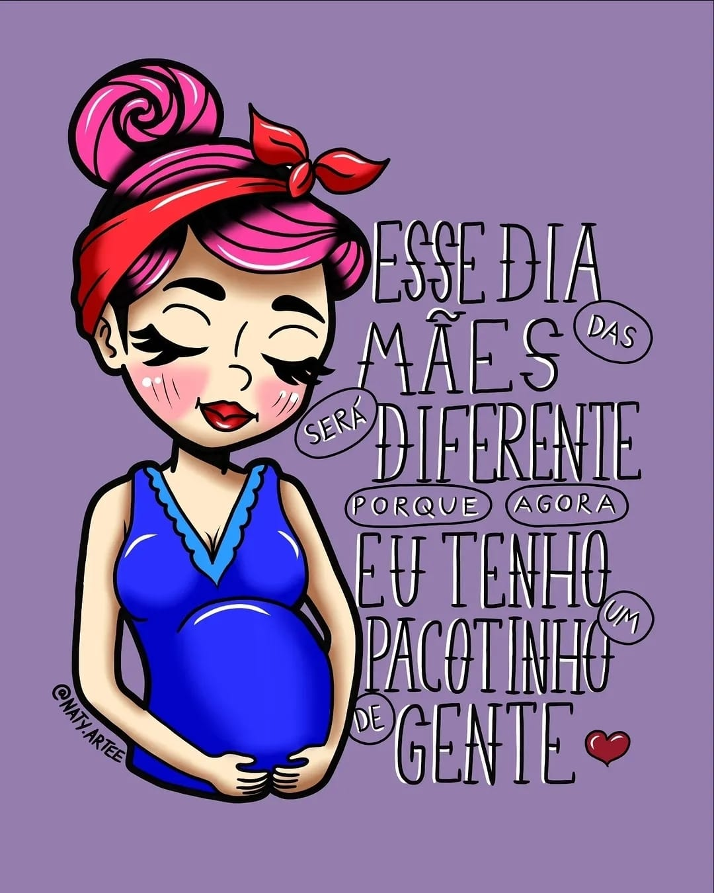
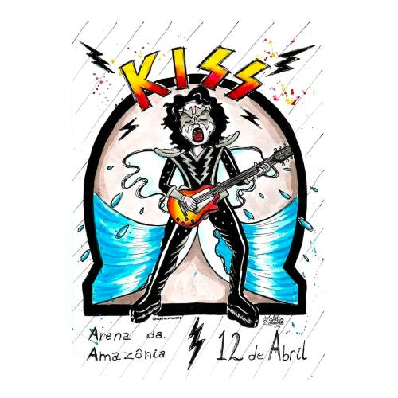

Ilustrações, Afeto e Arte Visual
Seja bem-vindo ao portfólio oficial. Explore minhas criações em nankin, técnica mista e arte digital.
Ver Galeria CompletaObras em Destaque


Seja bem-vindo ao portfólio oficial. Explore minhas criações em nankin, técnica mista e arte digital.
Ver Galeria Completa
